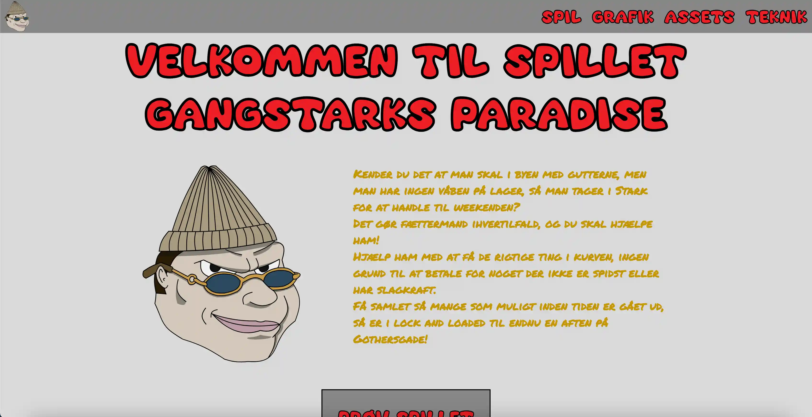

TEMA 4
ANIMATIONSSITE

I tema 4 blev vi introduceret til animation, herunder Javascript og Adobe Illustrator. Det var første gang, jeg skulle kode mit eget spil fra bunden. I denne proces havde vi en anden tilgang
end i tema 3; vi skulle i idéfasen lave paper prototypes og definere værdiord for vores spil. Jeg begyndte med at lave skitser og videreudviklede dem til liv i Figma og Illustrator som
SVG-filer. Før vi startede kodningen, skulle vi også lave et state machine diagram, som var en måde at "skitsere" hjemmesidens interaktioner ud fra brugerens handlinger. Dette var første
gang, vi brugte Javascript, hvilket var både spændende og udfordrende og jeg endte med et produkt, jeg er meget stolt af.
Klik på billedet for at få adgang til projektet!